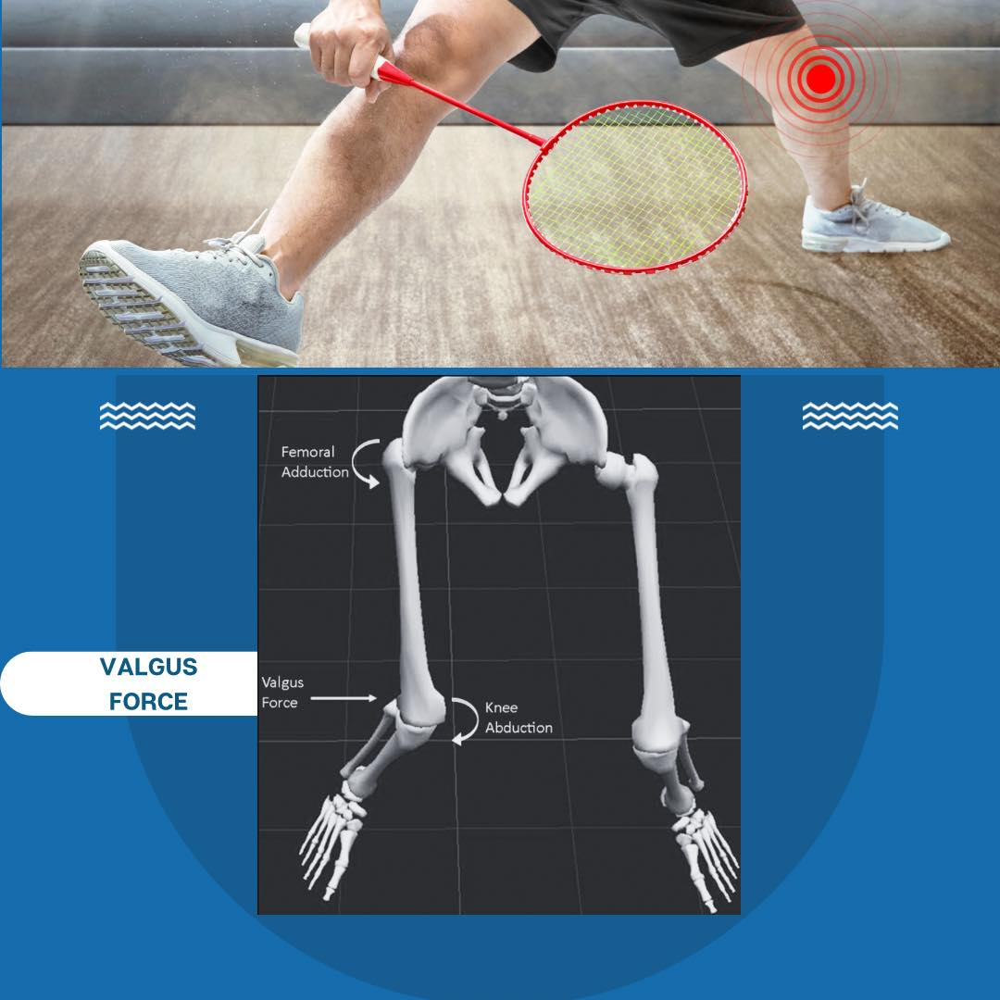
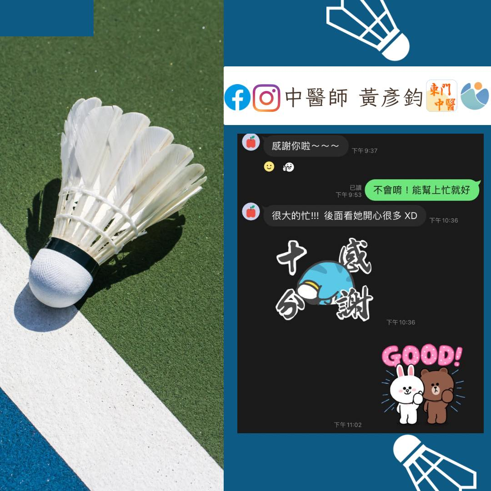
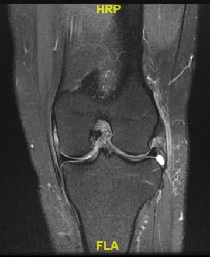

膝蓋痛是常見的運動傷害，不論是跑步、球類運動、極限體能或日常生活都需要膝關節的承…
膝蓋痛是常見的運動傷害，不論是跑步、球類運動、極限體能或日常生活都需要膝關節的承重與反覆活動，前陣子來了位一起打羽球的球友，馬拉松式的長時間打球後，在接完一個長球回場後，膝蓋「趴」的一聲，然後左膝蓋就不能承重不能彎曲了🥲
來診所處理後，雖然活動度恢復，承重能力也增加，日常生活行走都趨於正常，但還是不太放心請她去進一步照斷層，然後就發現ACL真的斷裂了🥲🥲🥲，半月板也因為撞擊有磨損跟破裂⋯⋯⋯
考慮到她年紀還輕，復原能力還很好，也很愛打羽球，於是建議她趕快去微創開刀，術後復健後依然可以是條活龍！
話說回來，平時膝蓋還是得好好保養愛護啊！千萬別等到受傷了才知道膝蓋的好🥹🥹🥹
#膝蓋痛 #ACL #前十字韌帶 #羽球
太初中醫診所
中醫師 黃彥鈞
中醫師 薛博文
中醫安心講堂 褚衍強中醫師


